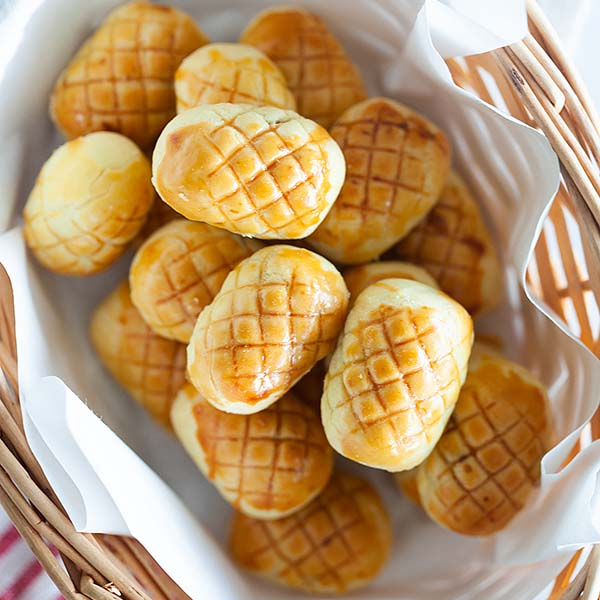

Pineapple Tarts

Description
Pineapple tart is a small, bite-size tart filled or topped with pineapple jam, commonly found throughout different parts of Southeast Asia such as Indonesia, Malaysia, Brunei and Singapore in various forms.
Ingredients
- Pineapple jam(store-bought or home made)
- Cake flour
- Corn flour or corn starch
- Chilled butter
- Confectioner's sugar
- Milk powder
- Egg yolk
- Vanilla extract
- Salt
- Yellow food colouring
Steps
- Roll the pineapple jam into balls, each weighing 10 g. Cover loosely with clingwrap and let the jam sit in the chiller while you make the pastry dough.
- Sift together cake flour, corn flour, confectioner's sugar, milk powder and salt (only add salt if you're using unsalted butter).
- With your fingertips, rub chilled butter cubes into the flour mixture until the mixture resembles coarse breadcrumbs. While rubbing, keep lifting the flour well up in the bowl. This allows air in between and prevents the butter from softening too much.
- Add the yolks, vanilla extract and yellow food colour (optional). Tip: If you do add food colour, mix it in with the yolks before adding to the butter breadcrumbs.
- Start by using a fork or flexible scraper to mix in the yolks.
- Finish up by hand, mixing lightly until you get a soft and smooth dough. Be careful not to overwork the dough.
- Roll the dough into balls, each weighing 15 g. Then chill for 10 mins before filling.
- Flatten a ball of dough between your palms. Place a ball of pineapple jam filling in the centre.
- Enclose the jam. Gently press the pastry around to patch up places where it's too thin or where the jam isn't fully enclosed.
- Gently roll the enclosed tart between your palms to smoothen and shape into a golf ball.
- Place on a baking tray lined with baking paper, spacing the tarts an inch (2-cm) apart.
- Place the tray in the chiller for 10 to 15 minutes, before baking. Note: If you don't have room in your chiller to put in the tray, you can place the tarts close together on a large dish plate, and chill. Once chilled, the tarts will be firm to handle and it will be easy to transfer to the baking tray.
- Meanwhile, this would be a good time to start preheating the oven to 150°C (302°F). Have an oven rack placed in the centre of the oven.
- Brush the tops of the tarts with egg wash. Bake in the centre of the pre-heated oven for 20 to 25 minutes.
- Once the tops and base of the tarts have browned nicely, the tarts are done. This may take about 25 minutes, depending on your oven. Note: As the tarts bake, it is normal for cracks to appear. This is because the jam expands as it gets heated. Once the tarts cool, the cracks will shrink.
- Let the baked tarts cool on the tray for 5 minutes. Then, transfer to a wire rack to cool completely.
- Once completely cooled, store the pineapple tarts in an air-tight container and seal tightly. The tarts will keep well for up to 3 weeks in a cool, dry area.